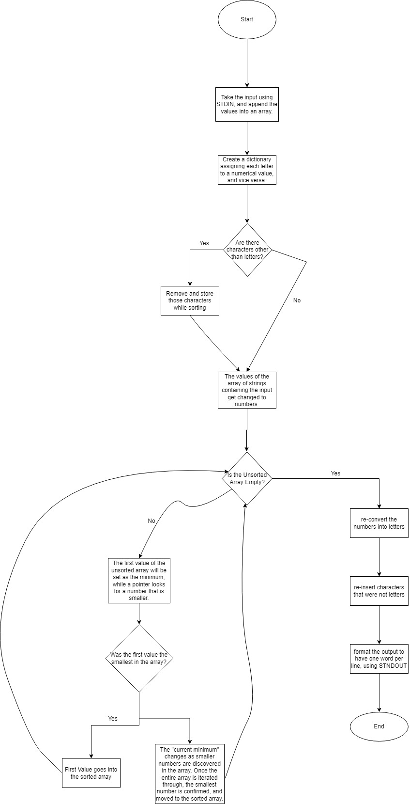

Optimal Sorting
ANYTHING THAT HITS 300,000 TIMED OUT. The reason I chose a line graph is because the growth and decrease continues in between the numbers of lines that I tested. The "ordered" files tend to have a lower execution time because no swaps need to occur. Reverse-ordered files take the most time, because every single element needs to be swapped. And finally, the random ordered files take a time that is in between the other two types, because some need to be swapped, while others do not. Bubble sort has a time complexity of O(n^2), because it has a nested for-loop. Both the outer and inner loop runs one time, at a time complexity of O(n), for each iteration, meaning it is O(n^2). In selection sort, the number of comparisons will be constant if the array size is constant. This makes it O(n^2) because it scans all unsorted elements each time to find the lowest value. Finally, Insertion sort is O(n), because it only looks at the current index and the one before it.
